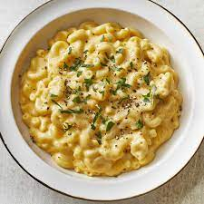

Mac and Cheese

Description:
A recipe for a healthy home made Mac and Cheese.
Ingredients:
- 1 (16 ounce) package whole wheat macaroni (such as Smart Taste®)
- 2 tablespoons butter
2 ½ tablespoons all-purpose flour
2 cups shredded low-fat Cheddar cheese
½ cup grated Parmesan cheese
3 cups low-fat (1%) milk
2 tablespoons butter
½ cup whole wheat bread crumbs
1 pinch paprika